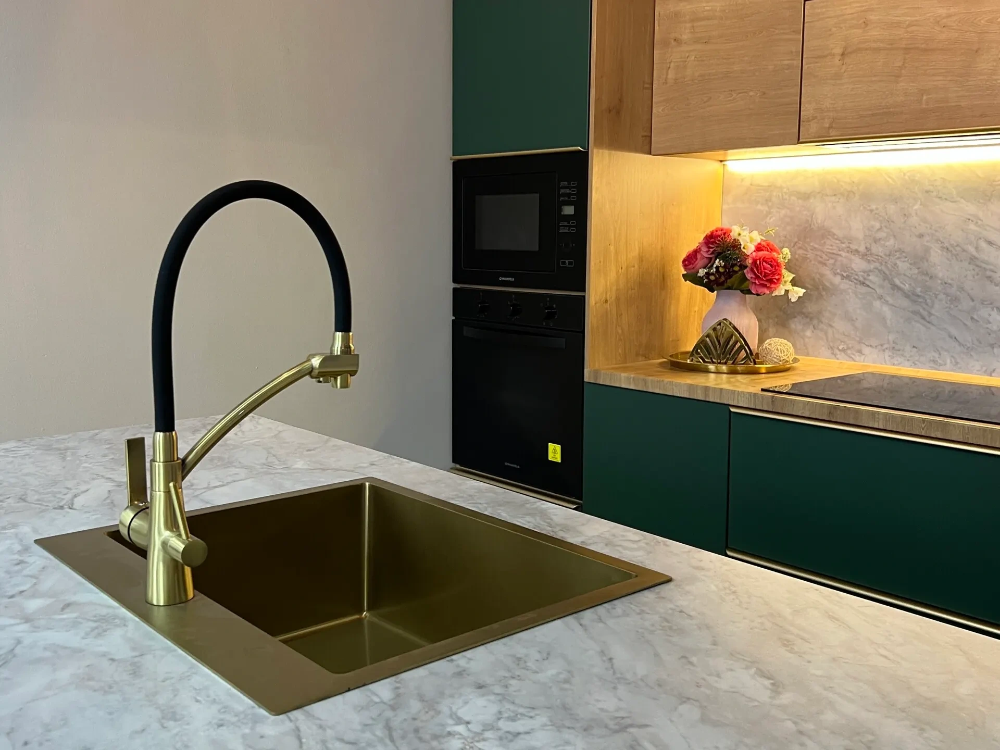
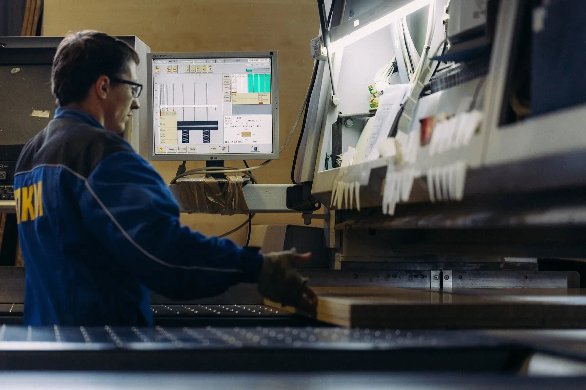
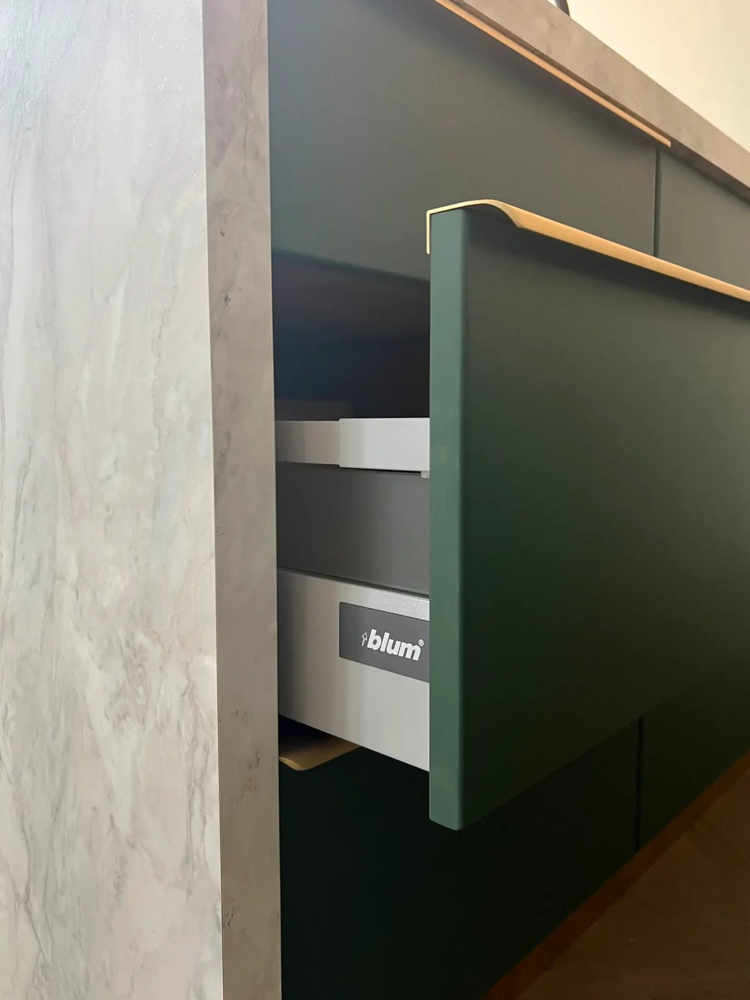
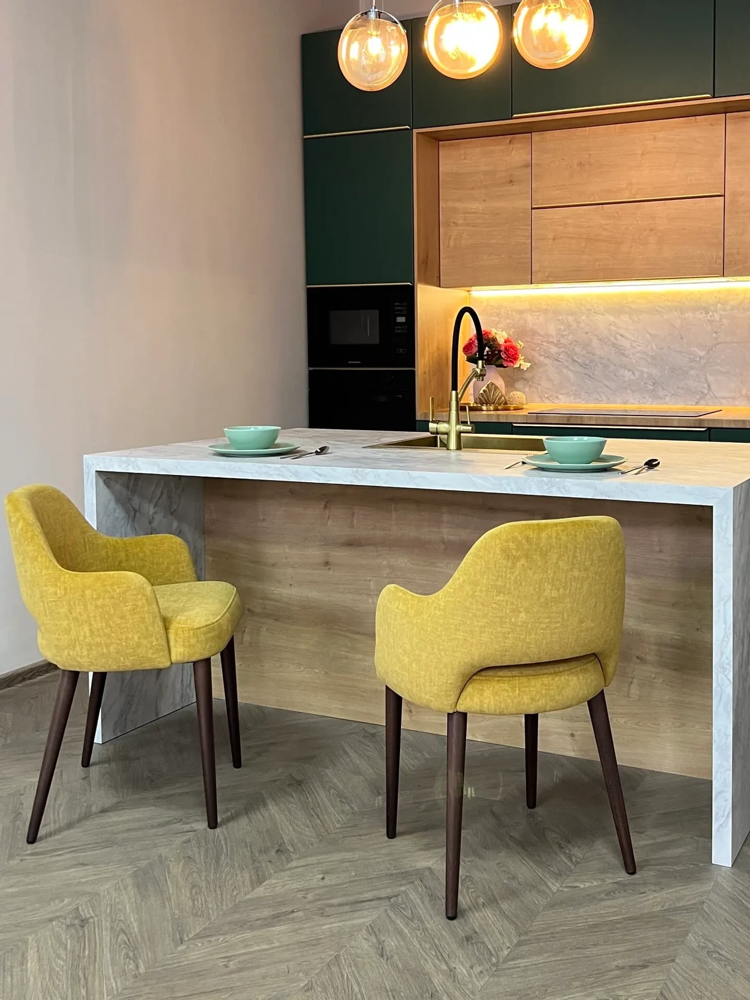
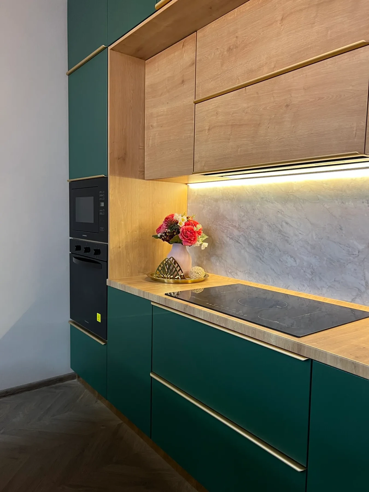
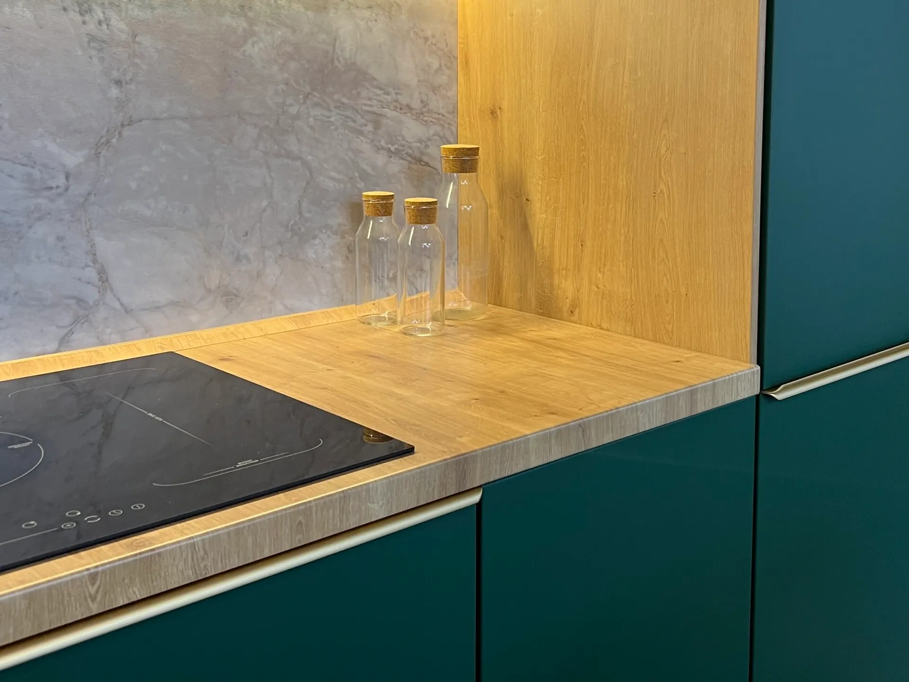

Мойка в острове
Места для завтрака с другой стороны. Техника встроена в колонну.
Кухни, шкафы и гардеробные от фабрики в Твери. Подберём материалы и наполнение, изготовим и установим.
Обсудить проект
с 1997года
своё производство
в Твери

до 30дней
изготовление мебели
в среднем

12месяцев
гарантия
на мебель

+7 (4822) 509-777Остров объединяет рабочую и обеденную зоны. Рассмотрим планировку, отделку и хранение на одном примере.

Места для завтрака с другой стороны. Техника встроена в колонну.

Зелёные фасады, декор под дерево. На острове столешница под камень.
Внутреннее исполнение крупным планом. Хранение дополняют верхние шкафы.
Общий вид, отделка и наполнение.
Нажмите на фото, чтобы рассмотреть целиком.